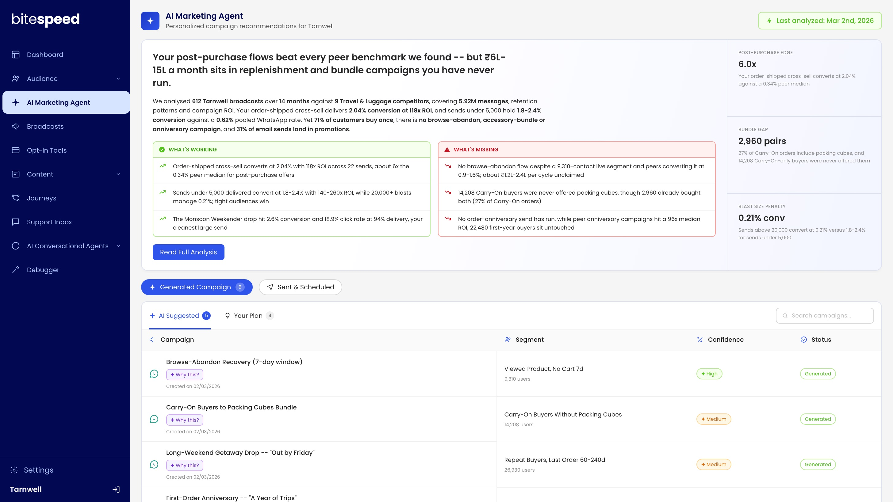
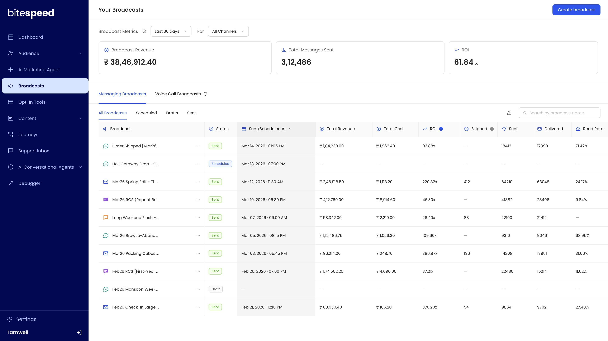
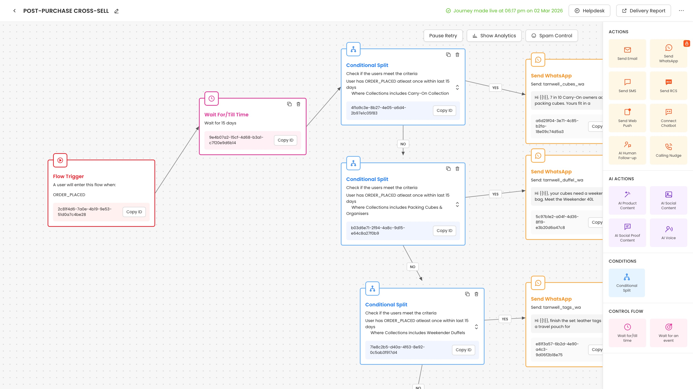
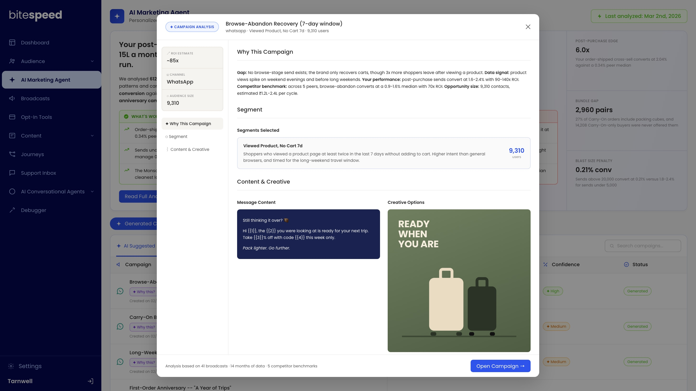
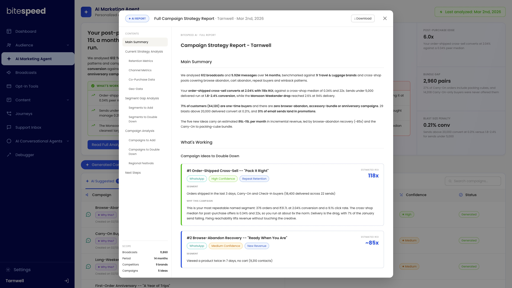

The only designer, from a growing startup to its AI agent
BiteSpeed is a startup in Bengaluru, backed by Sequoia's Surge. It helps Shopify brands sell over WhatsApp, email and SMS, with campaigns and automations built on the store's customers.
For almost two years I was its only designer, across product and marketing. Then I came back as a consultant and built its AI Marketing Agent end to end.

Everything a merchant touched, designed by one person
Campaigns, automations, the ads that brought merchants in and the deck that raised the next round. Broadcasts is one place for every channel, WhatsApp, email, SMS and RCS, and every send shows what it earned: revenue, cost and ROI next to delivery. Journeys is a trigger, a wait, a question about the customer, then the right message.


An agent that finds the money a brand is leaving on the table
Every brand on BiteSpeed has the same question: what should we send next? The agent answers it from the brand's own data. It reads months of broadcasts and messages, with retention, channel and co-purchase patterns. It benchmarks each number against what similar brands achieve with the same kind of campaign. Then it prices each gap as monthly revenue, writes ready-to-send campaigns, and leaves a downloadable strategy report.

